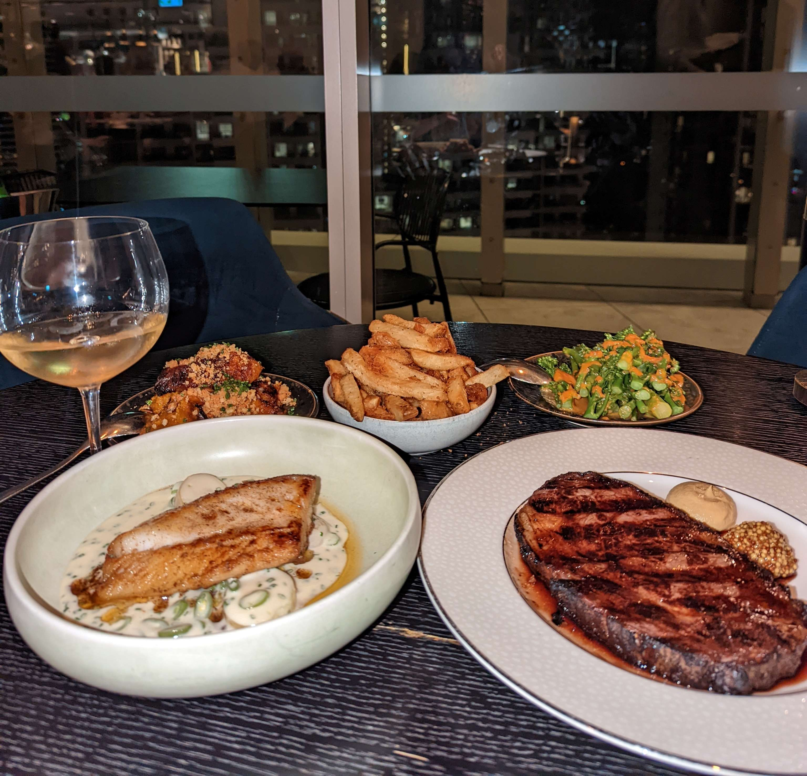

Latest Video Post
Here's the latest from the Observation Youtube Channel
A video that highlights the variety in leaf colour.
Latest Blog Post
Here's the latest from the blog
 Review: Nineteen @ The Star
A review of the fine dining restaurant, Nineteen @ The Star in the Gold Coast Australia. Click through to find out my thoughts about this restaurant.
There's more to OBSERVE!
Click the OBSERVE eye to check out the YouTube Channel.
Interacting with these videos help support the channel and this website, allowing us to create more content like this.